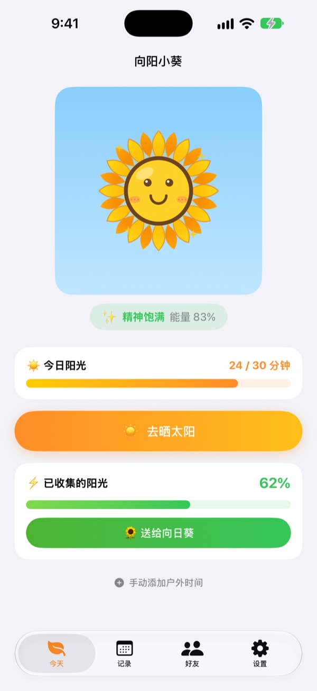
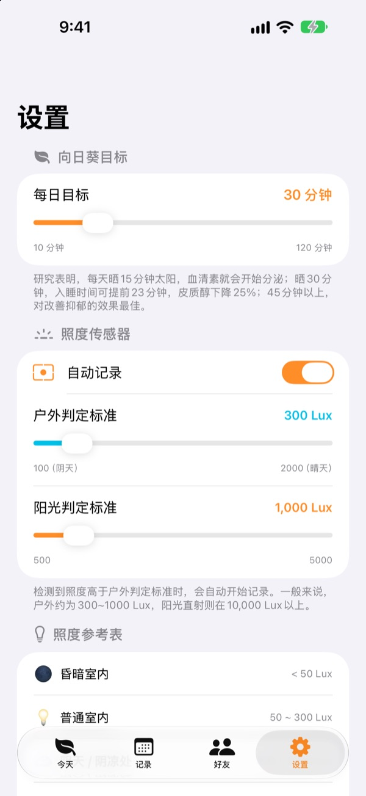
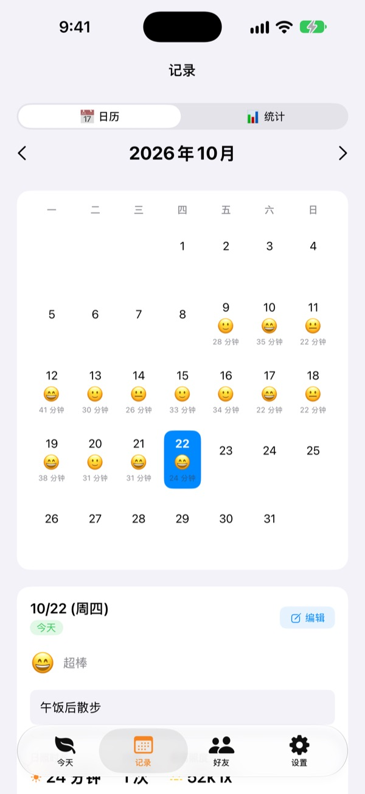
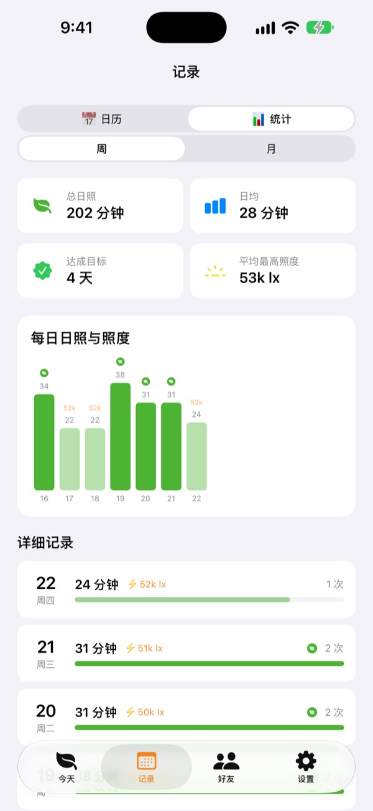

用今天晒到的阳光，
养一株向日葵
出门就会自动累计晒太阳的时长。把收集的阳光送给向日葵，它就精神饱满；几天不管，它就会蔫下去。
所有功能免费，记录只保存在设备上。

动手收集阳光
选好亮度和时长，晒一会儿，再把阳光送给快蔫了的向日葵。
今天你晒了几分钟太阳？
上班路上走几步，中午出去买个饭。一整天待在室内，往往到了晚上才发现几乎没见过太阳。向阳小葵把你在户外的时间变成具体的数字，向日葵也在等你明天再出门。
出门就自动测量
点一下 去晒太阳 再出门，App 会用前置摄像头的曝光信息测量周围亮度。像户外一样亮的光线持续约 30 秒，就开始记录。不会拍照，也不会保存任何照片。
开始记录后，传感器每 2 分钟只开 20 秒，尽量省电。

每天记下阳光和心情
在日历里为每一天留下晒太阳的时长、心情表情和一句话。在户外却没测到的时间，可以用 手动添加户外时间 补上 5 到 120 分钟。

一周、一个月的变化一目了然
周统计和月统计告诉你哪些天达标、平均晒了多久。每日目标可设为 10 到 120 分钟，首页直接显示今天还差几分钟。
主屏幕和锁屏小组件、灵动岛也能看到今天的阳光和向日葵的状态。

三步开始
- 1
定好每日目标
默认 30 分钟，可在设置里改为 10 到 120 分钟。
- 2
出门晒太阳
点
去晒太阳，开着 App 走到户外。首次使用时会请求一次相机权限。 - 3
送给向日葵
点
送给向日葵，把收集的阳光变成能量。
不同亮度下的累计方式
- 低于 300 勒克斯
- 微弱光线：不计入晒太阳时间
- 300～1,000 勒克斯
- 户外/阴天：每 10 分钟 1～3%
- 1,000～10,000 勒克斯
- 阳光：每 10 分钟 3～33%
- 10,000 勒克斯以上
- 强烈阳光：每 10 分钟超过 33%
- 已收集的阳光
- 分钟数 × 平均亮度 ÷ 3,000（每次最多 100%）
- 向日葵能量
- 每小时减少 2.5%，一天约 60%
户外判定标准可在设置中调整为 100～2,000 勒克斯，默认是 300 勒克斯。
常见问题
阳光是怎么测量的？
App 通过前置摄像头的曝光信息估算周围亮度（照度）。像户外一样亮的光线持续一小会儿，就会自动开始记录。不会拍照，也不会保存照片。
测量时会很耗电吗？
确认是阳光后，传感器不会一直开着，而是每 2 分钟开 20 秒左右重新测量，其余时间只靠计时器记录，尽量省电。
向日葵总是蔫掉。
向日葵每小时会失去 2.5% 的能量。收集阳光后，请点 送给向日葵。晴天在直射阳光下晒 15～20 分钟，就能补回一天消耗的能量。
我在户外，却没有记录到。
可以在首页下方点 手动添加户外时间，补上 5 到 120 分钟。阴天不容易开始记录时，可以在设置里调低户外判定标准。
好友功能怎么用？
和朋友靠得很近（约 10 米以内）且两人都在测量阳光时，会自动连上。第一次遇到的人需要先确认“一起晒”，之后就自动连接。一起晒太阳时花瓣会染上缤纷的颜色，并在 3 天内慢慢褪回原色，好友页会留下你们一起晒的记录。两人都需要安装 App，并允许蓝牙和本地网络权限。
真的免费吗？
是的。没有广告，也没有付费项目，所有功能都能用。喜欢的话可以在 App 里打赏，但打赏不会解锁额外功能。
记录可以备份或迁移吗？
记录不经过服务器，只保存在设备上，保留最近 90 天。没有单独的备份功能，但会包含在 iCloud 或电脑上的 iPhone 备份里。
我想删除全部记录。
在 App 的设置里点 重置数据，或直接删除 App，所有记录都会清除，且无法恢复。
遇到问题该向哪里反馈？
请发邮件到下方地址，或在 GitHub 提交 Issue（github.com/M1zz/SunlightTracker/issues）。附上机型、iOS 版本和出问题时的情况，会很有帮助。通常几天内回复。
有问题或建议，请发邮件至 leeo@kakao.com。